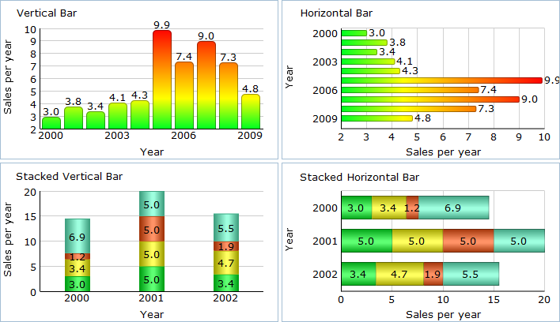
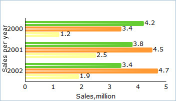
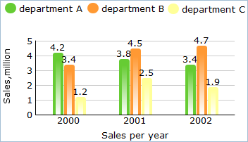

Bar Chart
Bar chart is the most common chart type to present data. It's used to compare two or more values and show their relative quantities.
DhmlxChart gives full scope to Bar Chart creation and offers these sub-types of Bar Chart:
- Vertical Bar
- Horizontal Bar
- Stacked Vertical Bar
- Stacked Horizontal Bar

Now let’s start to create a Bar Chart yourself step by step.
It will be a simple Bar Chart which you can improve at any time just adding additional functions and propeties.
First, we need to make some preparatory steps.
1. Decide what data you want to display. It can have different formats. In our examples we use Sales Information of one little company in json format.
var data = [ { sales:3.8, year:"2001" }, { sales:3.4, year:"2002" }, … { sales:4.8, year:"2009" } ];
2. Insert to your page an HTML container for your future chart with the name “chart_container”, for instance.
<div id=" chart_container" style="width:280px;height:250px;border:1px solid #A4BED4;"></div>
Now, we are ready to fill in an object constructor. Just make the next step to know the details.
3. Set chart type depending on the sub-type you have chosen.
Vertical Bar - “bar”
Horisontal Bar - “barH”
Stacked Vertical Bar - “stackedBar”
Stacked Horizontal Bar - “stackedBarH”
We will create classic vertical bar, so in the property 'view' we'll specify the value “bar”.
var barChart = new dhtmlXChart({ view:"bar" .... })
3. Define 'chart_container' in the ‘container’ property to set chart container.
var barChart = new dhtmlXChart({ view:"bar", container:"chart_container" ... })
4. Assign '#sales#' to the ‘value’ property to set data that Bar Chart will present.
var barChart = new dhtmlXChart({ view:"bar", container:"chart_container", value:"#sales#", ... })
5. Select a bar color. For a example set value '#66cc33' (green color). Know more about chart color here.
var barChart = new dhtmlXChart({ view:"bar", container:"chart_container", value:"#sales#", color:"#66cc33" ... })
6. Set bar width e.g. value '30'.
var barChart = new dhtmlXChart({ view:"bar", container:"chart_container", value:"#sales#", color:"#66cc33", width:30 ... })
7. Assign value '#year#' to the ‘tooltip’ property of an object constructor to set bar tooltip. Know more about chart tooltip here.
var barChart = new dhtmlXChart({ view:"bar", container:"chart_container", value:"#sales#", color:"#66cc33", width:30, tooltip: "#year#" ... })
We've almost finished. A little patience. Scale is left.
8. Name xAxis and choose scale data (parameter 'template'). In the example we will use the following values:'#Sales per year#' as xAxis name and '#year#' as scale data. Know more about chart scale here.
var barChart = new dhtmlXChart({ view:"bar", container:"chart_container", value:"#sales#", color:"#66cc33", width:30, tooltip: "#year#", xAxis:{ title:"Sales per year", template:"#year#" } ... })
xAxis is completed. Next in turn - yAxis.
9. Name scale and define scale data as well. Also set start, end positions and scale step. We will name the yAxis - '#Sales,mil#' and set the following values:start - '3', end - '9', step - '3'. Data value is '{obj}'. Know more about chart scale here.
var barChart = new dhtmlXChart({ view:"bar", container:"chart_container", value:"#sales#", color:"#66cc33", width:30, tooltip: "#year#", xAxis:{ title:"Sales per year", template:"#year#" }, yAxis:{ start:3, end:9, step:3, template:"{obj}", title:"Sales,mil" } })
10. Use method parse() to process data.
barChart.parse(data,"json");
We've finished. Just run the application to see your creation.
 
The addSeries() method in details and with example.
Examples for each sub-type you can see here.